[Home]-> 在本機 XAMPP 安裝 roundcube
實際︰ 0.5 天
2016-05-26 08:00 ( 0.5 )
工作記錄︰
Download installer
https://roundcube.net/download/
1.2.0 - Complete 1.2.0
Setup working dir
D:\xampp\htdocs\526\roundcubemail
以簡易月日命名資料夾
Visit localhost
http://localhost:8080/526/roundcubemail/
直觀查看上述網址，預期報錯，信息為 config.inc.php was not found.
Start to install,
http://localhost:8080/526/roundcubemail/installer/
得到系統檢查的信息
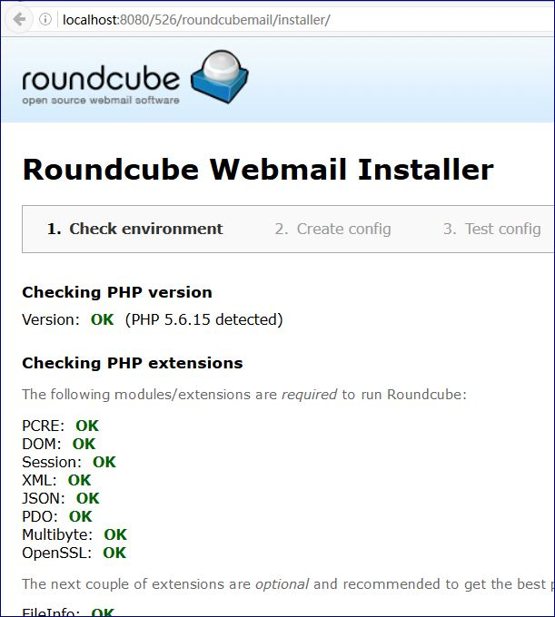
在本機目前XAMPP的環境，有幾項要先處理
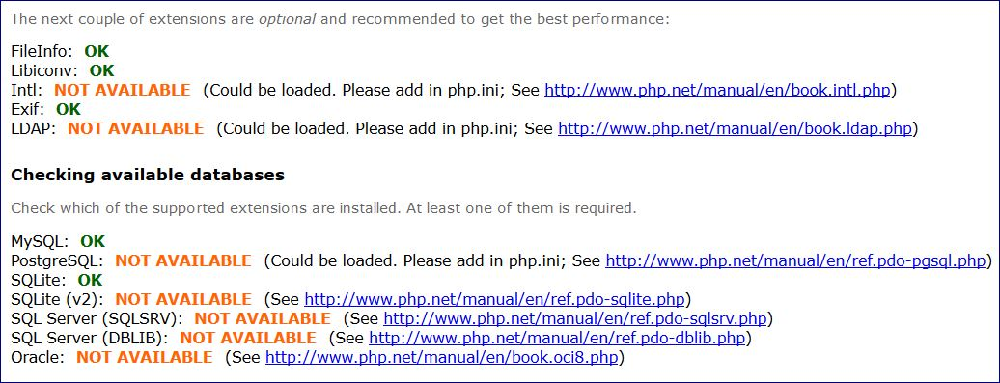
處理 Intl
目前情況是 Intl: NOT AVAILABLE
參考 http://www.php.net/manual/en/book.intl.php
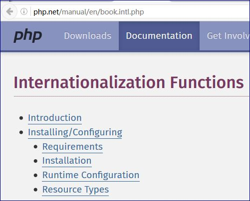
找到關於 XAMPP 的做法
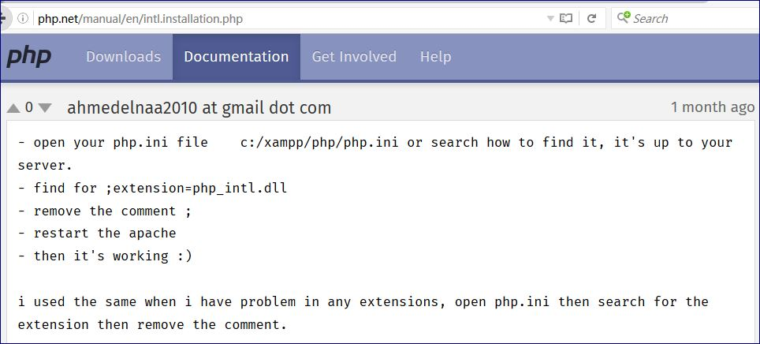
先找到 php.ini檔案
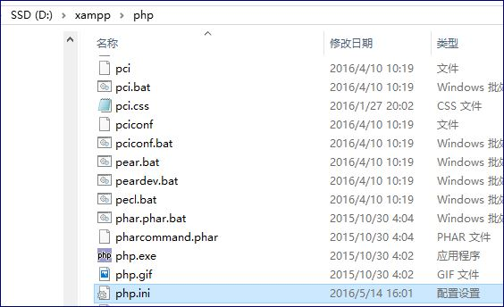
找到該行去掉註釋
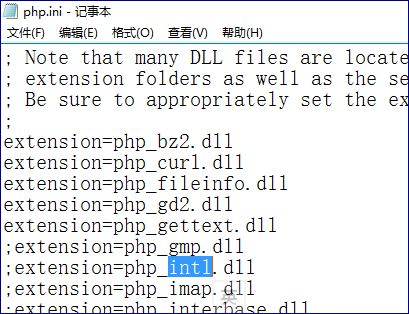
重啟 Apache
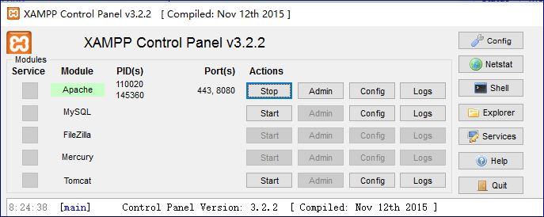
再訪問確認問題解決
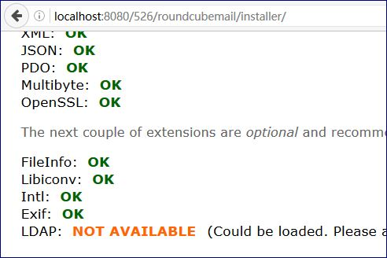
處理 LDAP
目前情況是 LDAP: NOT AVAILABLE
參考 http://www.php.net/manual/en/book.ldap.php
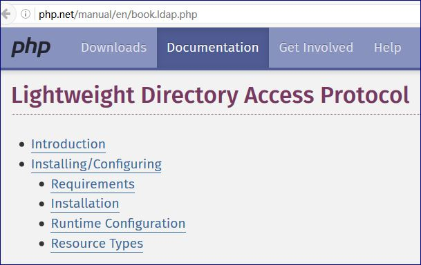
先找到 php.ini檔案
找到該行去掉註釋
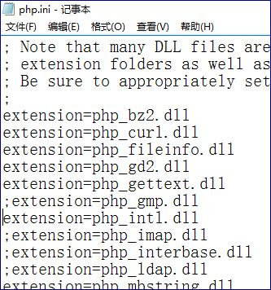
重啟 Apache
再訪問確認問題解決
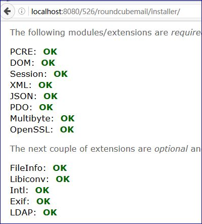
下一步 Create config
數據庫有MySQL，因此可以繼續
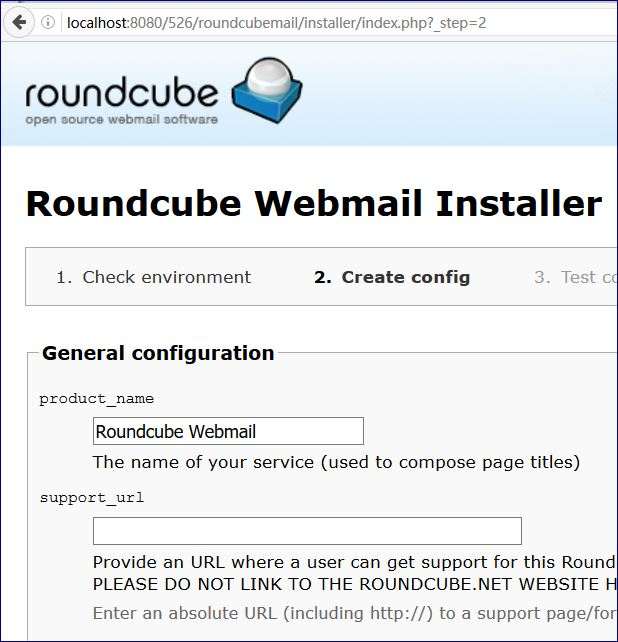